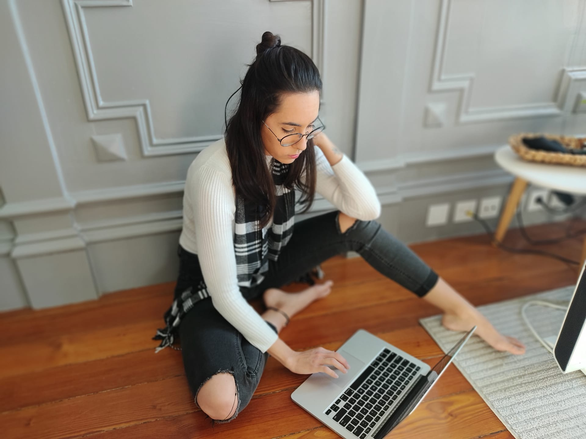

Márian Wiermann
Desenvolvedora Front End
Formada em Arquitetura e Urbanismo, migrei para área de programação procurando aliar meus conhecimentos de design e experiencia do usuário com uma base de facilidades tecnológicas da rotina do usuário.
Do mundo da ergonimia e beleza encontradas na arquitetura e design interiores hoje migro para o mundo na ergonimio e beleza encontradas na tecnologia.
Sobre
Do mundo da ergonimia e beleza encontradas na arquitetura e design interiores hoje migro para o mundo na ergonimio e beleza encontradas na tecnologia.
Do mundo da ergonimia e beleza encontradas na arquitetura e design interiores hoje migro para o mundo na ergonimio e beleza encontradas na tecnologia.
Do mundo da ergonimia e beleza encontradas na arquitetura e design interiores hoje migro para o mundo na ergonimio e beleza encontradas na tecnologia.
Márian Wiermann Márian Márian Wiermann Wiermann Márian Wiermann Márian Wiermann Márian Wiermann Márian Márian Márian Wiermann Márian
GitHub
Projeto de landing page
HTML5
CSS3
Aplicando formulário
HTML5
CSS3
Aplicando modo noturno
HTML5
CSS3
JavaScript
Contato
mwcasas@hotmail.com
+55 11 98144 0327